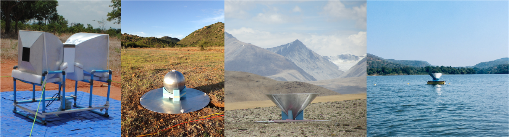
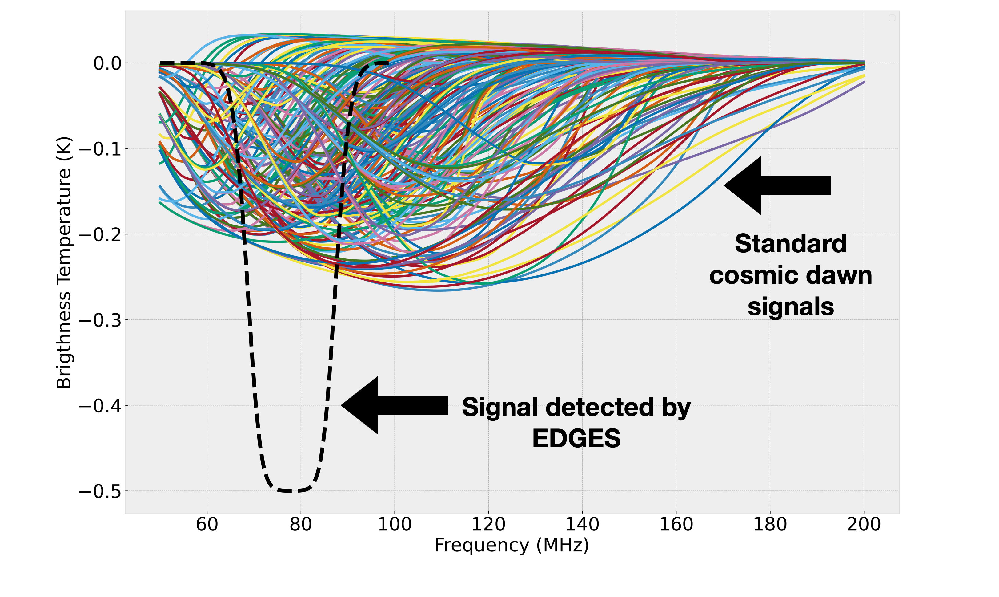
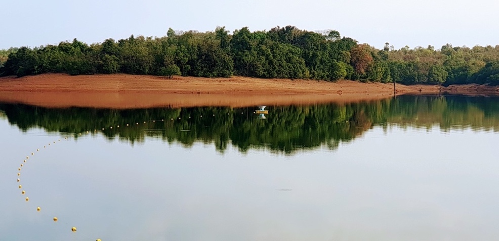
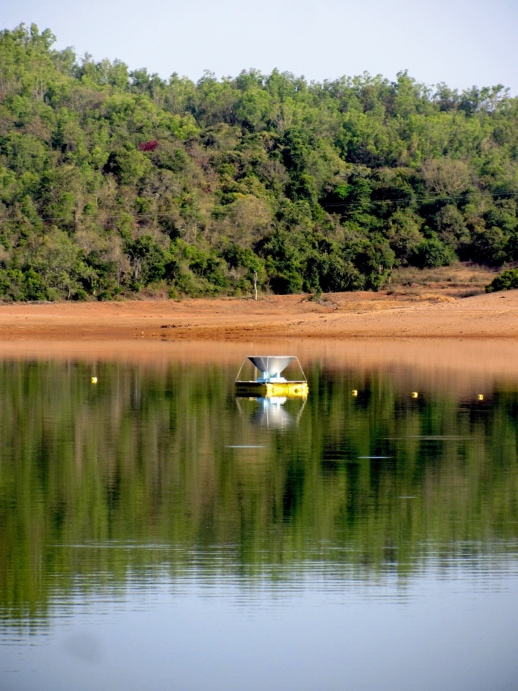

SARAS 3 telescope refutes astrophysical origins of the claimed cosmic dawn signal
SARAS 3 experiment, designed and developed at Raman Research Institute, has conclusively refuted the claim of detection of the signal from cosmic dawn by EDGES experiment. It has become the first experiment worldwide to reach the required sensitivity and cross-verify the claim. Given the unusual nature of the claimed signal, several non-standard cosmological models were proposed. SARAS 3 findings do not support these exotic models proposed previously. The results are now published in Nature Astronomy.
The first light in the Universe
Observations of the cosmic microwave background have transformed our knowledge about the first atoms in the Universe. Similarly, we have a reasonable understanding of our local Universe through multi-wavelength observations conducted routinely via Earth and space-bound telescopes. However, there is a knowledge gap in understanding the transition of the Universe from being filled with hydrogen to the Universe as we know it today. The transition encompasses the very first stars and galaxies and ionization of the Universe through radiation emitted by them. This period, referred to as the cosmic dawn and epoch of reionization, poses several questions. These questions include the formation of the first stars in metal-free environments, heating and ionization of the Universe via radiation from these first stars, and timelines for various events in this period (https://www.cfa.harvard.edu/~loeb/sciam.pdf).
One of the ways to answer these questions is to observe the cosmic dawn through radiation emitted by hydrogen atoms. Due to spin-flip transition, the hydrogen atom emits radiation at 21-cm wavelength (rest-frame frequency of 1420.4 MHz) (https://www.cv.nrao.edu/~sransom/web/Ch7.html#S8). The 21-cm signal from cosmic dawn is expected to arrive on Earth stretched in wavelength to meters and lowered in frequency by the expansion of the Universe to lie in the radio frequency band 50-200 MHz. Each frequency would provide a snapshot of the Universe at a given instant!
However, detecting a signal from such an early period of the Universe is extremely difficult. The same frequency range is home to several terrestrial interference sources, including FM and TV stations, satellites, power line transmissions, etc. Even if one were to avoid all the terrestrial interference, our Galaxy emits radiation that is 100,000 times stronger than the strength of the signal! Another part of the challenge is that we do not know what the 21-cm signal looks like, unlike some other cosmological signals. While we have some broader ideas about its nature, its exact characteristics cannot be known owing to our poor understanding of the first stars. It’s like looking for a needle in a haystack while not knowing what the needle really looks like.
In such high precision measurements, the radio telescope must have high calibration accuracy to separate the contributions from the instrument, terrestrial interference, and the Galaxy to finally get down to the treasured 21-cm signal. Any small miscalibration of the telescope can lead to a false detection or limit us from reaching the sensitivity levels needed to detect the signal.
SARAS experiment
SARAS experiment at Raman Research Institute (RRI) is custom designed to detect the faint 21-cm signal from cosmic dawn. SARAS has been meticulously designed and calibrated to measure sky radiation to an accuracy of 0.0001%. Once built and tested, it is deployed in the remotest sites in India to observe the night skies in a minimum terrestrial interference environment. The observations span over a few weeks, followed by months of analysis, refinement of the design, and re-deployments for a fresh season of observations. Several surveys were conducted early on to find sites conducive to such experiments.

Figure 1: Evolution of SARAS experiment and sites over the years (Credits: Author)
EDGES result
EDGES is a radio telescope operating in Western Australia. It is led by astronomers at Arizona State University and MIT. The experiment claimed detection of the 21-cm signal from cosmic dawn in March 2018 (https://www.nature.com/articles/nature25792). This was the first discovery claim in the field of 21-cm cosmology and rightly created much excitement in the astronomy community worldwide.
However, the detection looked nothing like the theoretical predictions. The strength of the reported signal was at least twice compared to theoretical predictions. Therefore, the EDGES claim of detection led to several speculations about how the Universe might differ from current understanding. These speculations included exotic physics, non-standard cosmology, a new population of galaxies, and new models of dark matter that may have resulted in such an unusual signal. However, appreciating that in such difficult measurements, errors in instrument calibration might result in spurious deductions, cross verification of such a claim had become an urgent priority.

Figure 2: 21-cm signals as predicted by standard cosmology (colored lines) and the detection by EDGES experiment (dashed black line) (Credits: Author).
Latest Deployment
The third edition of the telescope, SARAS 3, was deployed on lakes with a focused goal to cross-verify the EDGES claim. This was the first instance ever for a radio telescope to observe on water. The reason for floating the telescope on the water is to provide a homogenous medium of high dielectric constant below the antenna. Such a medium enhances telescope performance and reduces confusing radio waves emitted by the very ground beneath radio telescopes. After an extensive search, two lakes in Karnataka, Dandiganahalli Lake and Sharavati backwaters, were selected for observations. The observations were carried out in January and March 2020, ending with a lockdown in Bangalore!


Figure 2: SARAS 3 deployment (Credits: Author)
Analysis and Findings
Before one can start looking for the presence of the cosmological signature in the data, several corrections are required. These include calibrating the “bandpass response” of the telescope, rejecting the interference signals from terrestrial sources, accounting for the varying efficiency of the antenna over the observed frequency range, and subtracting off the contributions from the telescope and water. This process is followed by adopting a model that represents our knowledge about the emission from the Galaxy and any residual contributions left by the instrument. Once we have a model, we can ask whether the claimed cosmological signal exists in the processed data. By adopting several different methods of asking this question, SARAS 3 observations found no evidence of the signal via each of them. The signal was rejected at 95.3% confidence. Therefore, the finding implies that the detection reported by EDGES was plausible contamination from their instrument and not a signature from the early Universe. SARAS 3 was indeed the first experiment to reach the required sensitivity and cross-verify the claim of the signal detection.
However, 21-cm signal from the early Universe continues to elude astronomers worldwide! Having rejected the EDGES claim, SARAS 3 team is planning more observations on remote lakes in India. At the same time, there is a strong motivation to find pristine sites with little to no interference. One of the best sites imaginable is the far side of the Moon! Effectively shielded from both the Sun and the Earth, it is one of the quietest sites in the solar system to conduct cosmological observations. Therefore, we are proposing a space-based payload, PRATUSH, that would orbit the Moon, conducting observations when in the far side (https://wwws.rri.res.in/DISTORTION/pratush.html). It is currently under study phase, supported by ISRO. Such expeditions will allow us to detect the 21-cm signal from the cosmic dawn and unravel this last remaining gap in the history of our Universe.
Original paper: On the detection of a cosmic dawn signal in the radio background
First Author: Saurabh Singh
Co-authors: Jishnu Nambissan T., Ravi Subrahmanyan, N. Udaya Shankar, B. S. Girish, A. Raghunathan, R. Somashekar, K. S. Srivani, Mayuri Sathyanarayana Rao
First author’s Institution: Raman Research Institute (RRI), Bengaluru
Related articles
- India’s expanding Cosmology community
- Exploring the topology of hydrogen distribution in the early universe
- Gravitational Waves in an Inhomogeneous Universe
- Mass of the Black Hole in the nearby AGN: Mrk 590
- Shedding Light on the Cosmic Web with Fast Radio Bursts